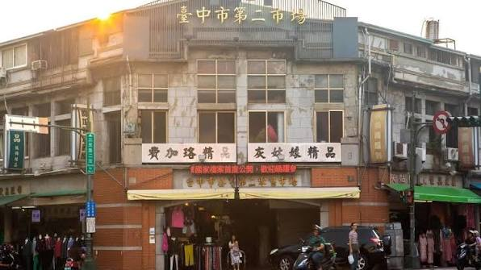
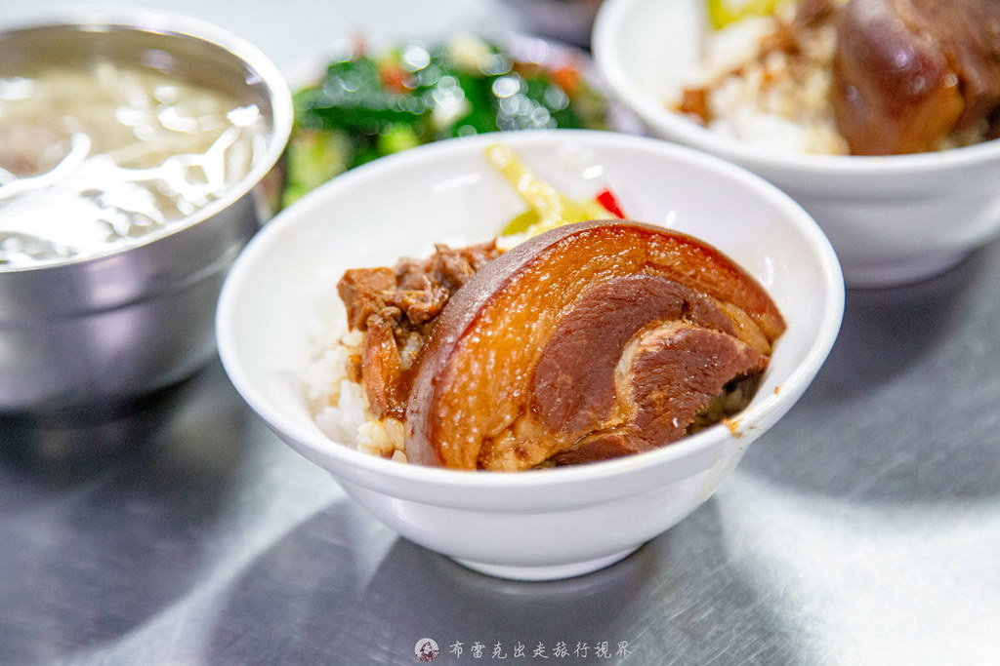
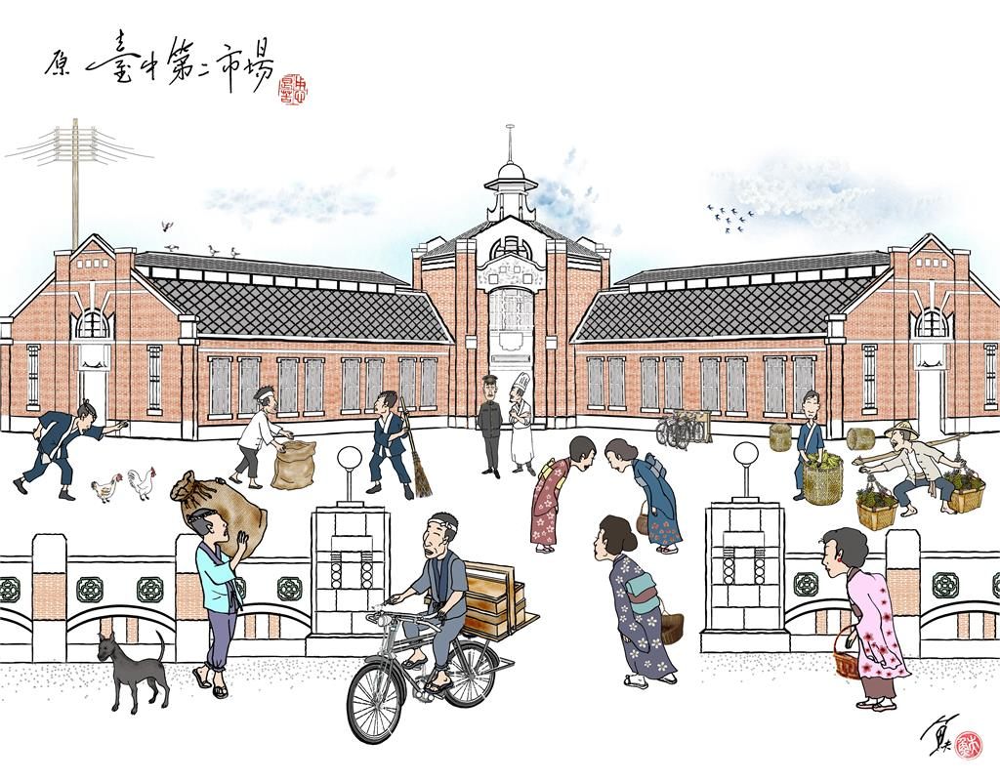
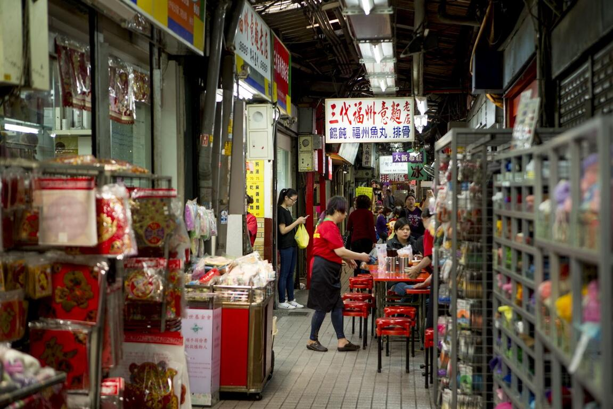
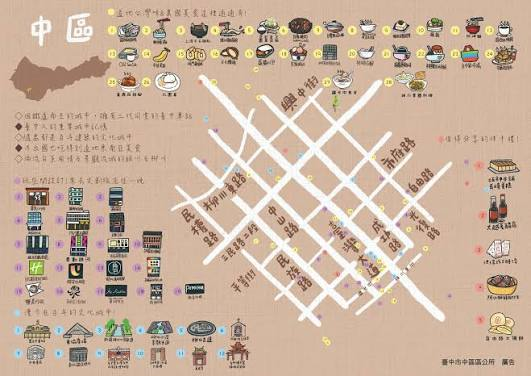
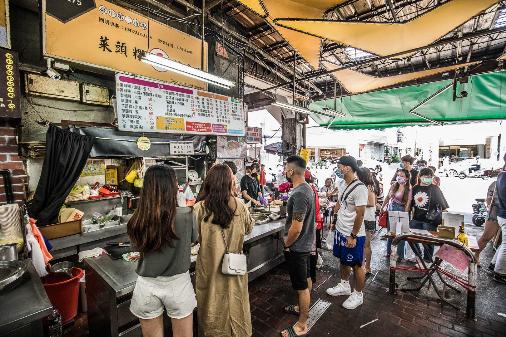
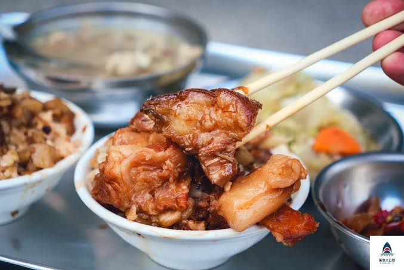
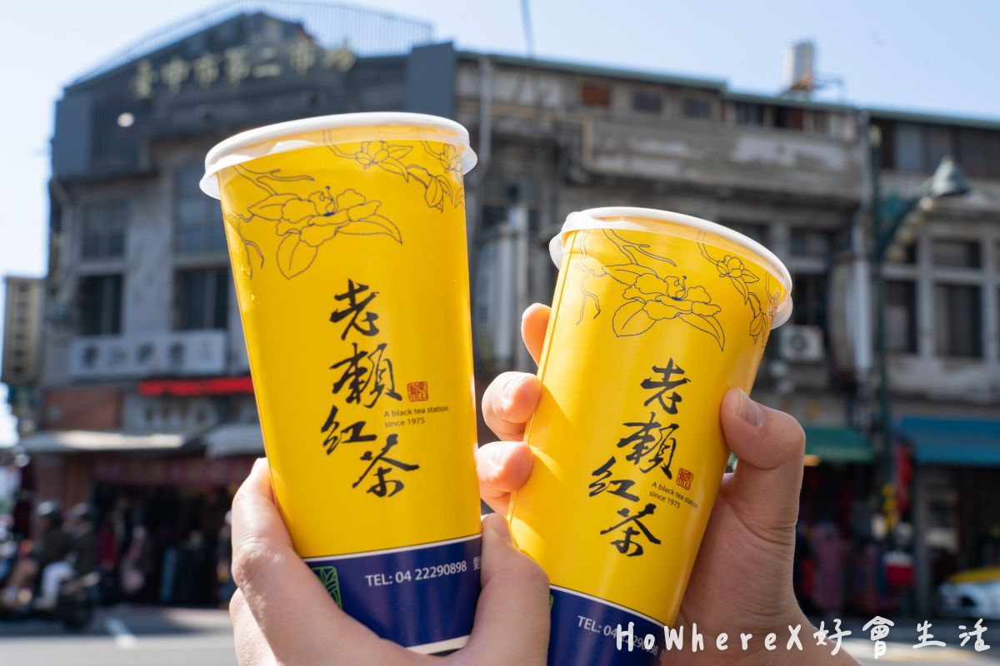

A WALK THROUGH OLD TAICHUNG
舊市尋味
走入第二市場，從在地美食重新認識臺中。
從第二市場的人情風俗，走進台中舊城的日常風景。，
沿著台中火車站，重新認識臺中舊城。


OLD TOWN
WHY SECOND MARKET?
第二市場的美，
要用心體驗。
台中第二市場位於台中市中心位於台中市新富町三丁目，除了本館在外側也設有簡易店鋪以及魚、蔬菜批發市場。由於是臺中市所建設的第二個消費市場，又俗稱為第二市場。
六角樓的建築是此市場的標誌與靈魂所在，承載近百年歷史與美食文化，遊客可在此體驗美食並欣賞這座古蹟建築，是探索台中在地生活的重要地標。
「走入第二市場，從在地美食重新認識臺中。」
HISTORY & LITERATURE
六角樓
在日式建築特色下，
感受舊城的美。

老建築保留著時間的痕跡，
也讓歷史文化走進日常風景。
從日治時期保留至今的古蹟
由中央的六角主樓向外延伸出三翼放射狀建築型態與六條通道（俗稱六條通），形成特殊的幾何佈局
日治時期此地曾是臺中市的最高點之一，六角主樓具備瞭望台、監控市場與防火預警的功能。


MARKET & DAILY LIFE
第二市場
從第二市場的人情風俗，
走進台中舊城的日常風景。
一座市場，收藏一座城市的生活
日治時期主要專營精緻、高價的高級商品，曾有「日本人的市場」之稱；早期周邊也曾是香蕉等水果的集散地
第二市場不僅保留了早年庶民採買的生活物資，更是臺中著名的「古早味早餐基地」與小吃集散地/王記菜頭粿糯米腸/山河魯肉飯 / 魯肉邱
市場官方介紹 ↗


市場營業狀況可能因攤商而異，以上資訊以臺中市政府市場介紹為參考。
CITYWALK ROUTE
從台中車站，
開始體驗舊城之美。
從台中火車站出發，走進第二市場。
讓舊城的歷史文化，感受於漫步舊城、。
打開地圖，開始漫遊
以下使用 Google Maps 路線查詢，步行路線與時間請以地圖即時結果為準。
IMAGE & STORY
用影像，記錄市場的樣貌。
從歷史建築到日常街景，透過影像呈現第二市場的魅力。
台中老記憶的味道，
帶你探索在地人的口袋名單。
以外國人的視角解鎖在地居民的口袋名單。
原來第二市場裡面有這麼多有歷史的餐廳，但一般韓國女生會適應這種口味嗎？
走入第二市場，從在地美食重新認識臺中
臺中第二市場介紹影片。
VISIT NOTES
出發前，
先收藏路線。
把文學館與第五市場排進同一趟行程，從文化探索走向在地生活。建議先確認館舍與市場當日開放狀況，再安排出發時間。